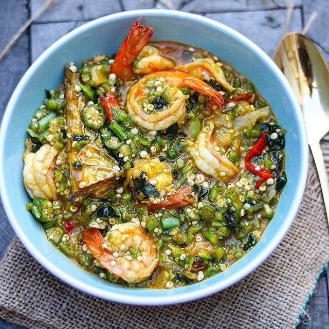
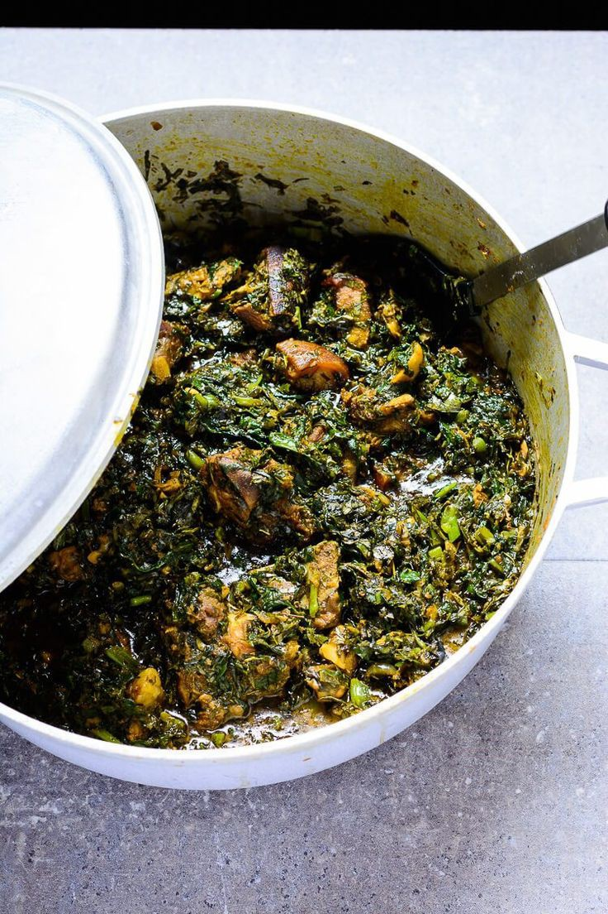

Boil the shaki, stock fish and dry fish in 1 litre of water with the stock cubes till they are well done(First sign of a done shaki is that the cuts will start curling on itself).
Wash the beef to be used for the soup, add it to the pot and cook on medium heat till done.
As soon as the shaki, fish and meat are done, add crayfish and pepper, stir and remove all the meat from the stock (water used in cooking the meat and fish) and place in a different pot or plate.
Add the ground egusi to the stock and stir.
If the stock from cooking your meat and fish is not enough to give you a medium consistency, add some water to get the consistency of evaporated milk or a bit thicker.
Cover and cook till the egusi cakes.
Stir and add a little bit more water(watch it closely so that it does not burn).
Repeat step 3, adding only a small quantity of water at a time.
After about 25 minutes, you will notice the clear egusi oil coming to the surface of the soup.
Add the red palm oil and bitter leaves (if it is your choice of vegetable), pepper and salt to taste and cook for about 7 minutes.
You know it is good to continue when the palm oil and egusi forms a good blend of light yellow colour.
Add the cooked meat and fish.
If using pumpkin leaves or any other soft vegetable, add it at this time and stir the soup.
Add salt to your taste, stir and leave to simmer for 2 minutes maximum.
Turn off the heat. Leave to stand for about 5 minutes before serving.
Okro soup

Ingredients
5 cups (250g) Okra
3 cooking spoons red palm oil
Beef
Shaki (Cow Tripe) (Optional)
Fish: Iced Fish (Mackerel/Titus), Dry Fish, Stock Fish
1 handful crayfish
Pepper and Salt (to taste)
Onions (optional)
Vegetable: Nigerian pumpkin leaves or spinach
3 stock/boullion cubes
Preparation
If you will use shaki (cow tripe) for the soup, wash and boil till it is done.
Add the soaked stockfish and dry fish to the cooked shaki.
When you are happy that the shaki and stock fish are well-done, add the beef, onions and stock cubes and cook till done.
Then add the iced fish and cook till done.
Pour red palm oil in another pot and heat the pot to dissolve the oil if it is congealed.
Add the diced okra and start frying to kick-start the drawing process, add some meat stock from time to time till you notice the okra start to draw(This process should take a maximum of 5 mins to avoid over-cooking the okra).
Now add the vegetable and stir well. Add all the meat and fish, crayfish, pepper and salt to taste. Then stir well.
Cover the cooking pot and leave to simmer and it is ready to be served.
Vegetable soup

Ingredients
1kg Pumpkin leaves
500g Water leaves (Talinum Triangulare)
600g Beef, Kanda, shaki and Dry fish
Pepper, Salt and ground crayfish: to taste
200ml Palm oil
1 cup Periwinkle
2 medium onions
2-3 stock cubes
Preparation
When the meat is done, add a generous amount of palm oil, the crayfish and pepper and leave to boil for about 10 minutes(The palm oil serves as the liquid in the Edikang Ikong soup).
You should try as much as possible to make it the only liquid in the soup.
Add the periwinkle and water leaves and leave to cook for another 5 minutes(You may have to cook for less time at this stage so that the water leaves are not over-cooked).
Now add the pumpkin leaves and salt to taste.
Stir the contents of the pot very well and turn off the heat.
Cover the pot and leave to stand for about 5 minutes.